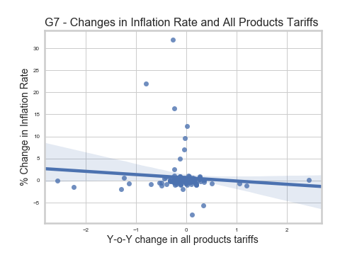

We expect that tariffs, particularly consumer goods tariffs, have a positive relationship with inflation rates. This is relatively straightforward - as with all other taxes, import tarifs will increase prices and hence living costs.

Applying a regression of changes in inflation on tariffs, we did not find any relationship between tariff changes and inflation rates at the aggregated tariffs level.
Drilling into sub categories (graph below), we found that tariffs on raw materials had a strong positive relationship with inflation rates. A potential reason for this could be that domestic production relies on imported raw materials, and high tariffs could adversely impact prices.
The effects of tariff changes may have been biased downwards, given the substantial clustering of observations around near-zero changes, we extended the analysis to consider the effect of larger changes in tariffs and if they are related to more significant changes in inflation rate. To do so, we categorized tariffs and inflation rates into 3 buckets - increases, decreases and same.

This did not result in any observable trend, as it appeared that the number of country/years with decreasing inflation were spread across all three cases of tariff changes.
At the sub-category level, there continues to be no obvious relationships between tariff changes and inflations, save for raw materials.
A linear look at the relationship between inflation rates and tariff changes appeared to show either zero or very slight negative relationships. This is counter-intuitive, as one would expect prices to rise when import taxes increase. However, these relationships are insignificant, and may be tainted by the clustering of observations around zero. We will explore the relationship further by bucketing changes.
On the other hand, bucketing of inflation and tariff rate changes provided an interesting insight - a decreasing tariffs appear more strongly associated with lowering rates of inflation than constant or increasing tariffs.
Although our hypothesis of a positive relationship remains unproven, this result is indicative that lower tariffs could help to lower inflation rates.
Observations based on sub-categories of tariff changes appear to support findings at the broader level. Even though tariffs on capital goods continue to exhibit a negative relationship with inflation rates, this effect may be driven more by falling inflation rates due to other economic reasons, as opposed to tariffs themselves. This is evident in falling inflation rates despite relatively constant tariffs (large number of observations in the 'same' bucket).
We see that both LatAm and G7 countries may have positive relationships between tariffs on raw materials and inflations. Again, this is likely to be because raw material prices influence prices of domestically produced goods, thus driving inflation. There is no concrete evidence that one group experiences it more strongly than the other.
Nonetheless, this adds strength to the story that tariffs should not be the weapon of choice to improve economic welfare.